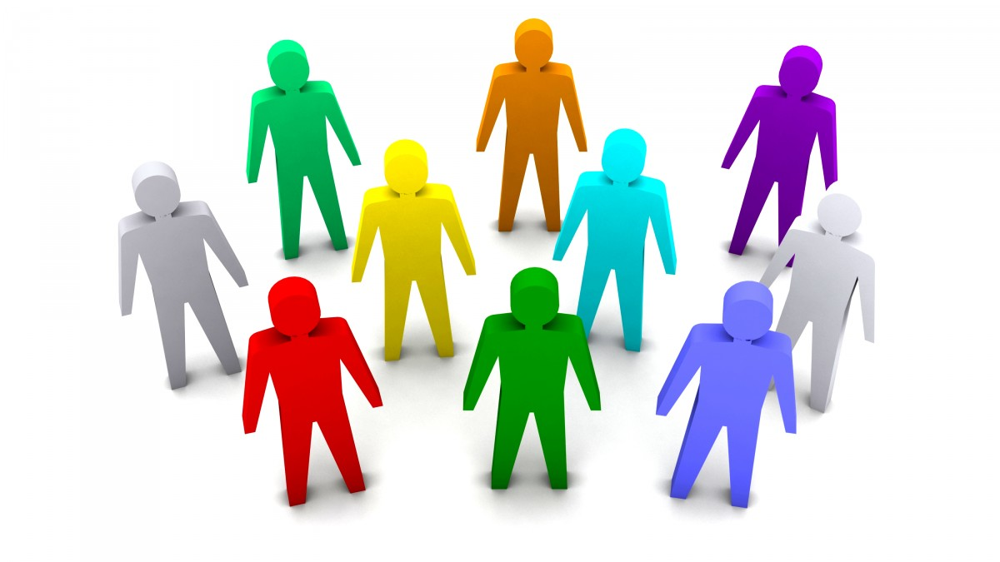
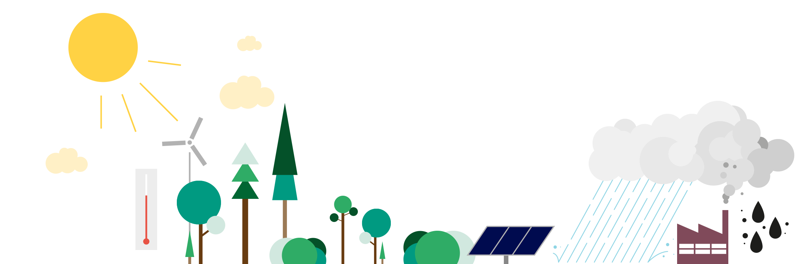
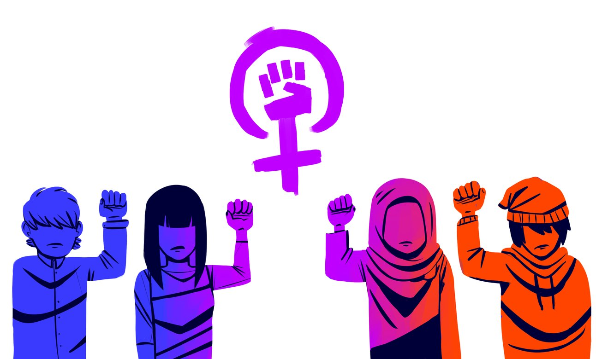
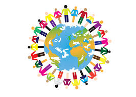

Arbeidsliv
Trygghet og rettigheter for lønnsarbeidere, også dem som mister jobben en periode, er avgjørende for et rettferdig samfunn.

Arbeid til alle
Alle arbeidsføre har rett og plikt til arbeid. Det er mange uløste oppgaver i Norge. Derfor vil Rødt at alle skal ha en jobb å gå til, og jobber særlig for at det opprettes flere arbeidsplasser i grønn industri. I tillegg vil vi dele på det arbeidet: Med 30 timers arbeidsuke (sekstimers normal-arbeidsdag) vil flere ha mulighet til å jobbe. I tillegg kan mange få en mindre hektisk hverdag med bedre tid til familie og livet utenfor jobben.
Trygghet
Altfor mange har usikre jobber, med lav stillingsprosent og midlertidig stilling. Derfor ønsker Rødt å styrke arbeidsmiljøloven, slik at flere som ønsker det kan få fast jobb og full stilling. Vi kan alle være uheldige og rammes av sykdom eller arbeidsledighet. Da trenger vi et fellesskap som tar vare på oss. Derfor vil vi forbedre dagpenge-ordningen, så ingen mister dagpenger uten å ha fått tilbud om jobb eller utdanning. Vi vil også reversere uførereformen.
Solidaritet
Over hele verden kjemper mennesker for frihet, rettferdighet og demokrati. Står vi sammen er vi sterkere. I arbeidet mot undertrykking, krig og rasisme har Rødt allierte over hele kloden.

Sammen er vi sterke
Det er bare ved å stå sammen at alle som lider under kapitalistisk konkurranse, klimaendringer, krig og undertrykking kan forbedre livene sine. Her har arbeiderbevegelsen i Norge et særlig ansvar. Vi må støtte alle som ønsker samme frihet og velstand som vi har kjempet fram for oss selv. Derfor støtter vi kampen for frigjøring som pågår i Palestina, Kurdistan, Vest-Sahara og andre steder. Derfor krever vi at oljefondet trekker seg ut av selskaper som knuser fagforeninger, diskriminerer kvinner og truer minoriteters rettigheter. Og derfor har vi jevnlig innsamlingskampanjer for å støtte våre venner andre steder i verden.
Fra hauk til fredsdue
Vi nordmenn er et fredelig folk. Likevel har NATO dratt Norge inn i en rekke feilslåtte kriger de siste årene. Rødt tror ikke bomber skaper fred eller demokrati. Derfor er vi mot angrepskrig. Derfor vil vi ha Norge ut av NATO, og heller styrke FN for å skape fred. Og derfor er vi mot å bruke over 200 milliarder kr. på nye bombefly. Vi vil heller bruke pengene på velferd hjemme og humanitær hjelp ute.
har blitt en krigsprofitør. Vi selger våpen over hele verden. Noen av dem ender i Gaza, hvor de dreper og lemlester palestinere. Rødt vil ha slutt på norsk våpeneksport til områder med krig og konflikt.
Miljø
Stadige krav om mer profitt og mer forbruk er i ferd med å ødelegge jorda. Barna våre vil vokse opp i en farligere verden på grunn av global oppvarming. Derfor haster det å bygge opp grønne næringer i takt med at vi trapper ned oljeindustrien. Norge må vise at det er mulig å ha et velferdssamfunn uten å ødelegge miljø og klima.

Fornybar industri
Det trengs nye arbeidsplasser for dem som i dag jobber i petroleumsnæringen. Derfor vil vi ha en ny industriell revolusjon, som er rettferdig og miljøvennlig. Vi vil blant annet satse på:
- Pilotprosjekter for offshore vindkraft
- Pilotprosjekt for elektrisitetsproduksjon fra dyp geotermisk energi
- Å opprette et nasjonalt industrifond, hvor en andel av oljefondet settes av til å gjøre strategiske investeringer i hjemlig industriproduksjon
- Å opprette et grønt infrastrukturfond, hvor en andel av oljefondet settes av til å gjøre nødvendige investeringer i utbygging av klimavennlig infrastruktur som jernbane, kollektiv, ladenettverk, havner og bredbånd i hele Norge
- En storstilt satsning på utvikling av hydrogen som drivstoff i ferger og skip
- Å ruste opp eksisterende vannkraftverk
- Det er like viktig å effektivisere strømbruken som å kutte oljeproduksjon og bygge mer fornybart. Derfor vil Rødt ha todelt elavgift, med høyere priser for luksusforbruk.
Aktiv næringspolitikk må brukes for å skape flere arbeidsplasser innen grønn industri og fornybare næringer. Den fornybare vannkrafta skal sikre og videreutvikle kraftforedlende industri, og vi sier derfor nei til bygging av kraftkabler til utlandet.
97,5 prosent fossilfri
Barna våre vil vokse opp i en farligere verden på grunn av global oppvarming. Derfor må vi si nei til å gi oljeindustrien nye områder, som utenfor Lofoten, Vesterålen og Senja. Vi må heller gå andre veien, og begynne å redusere oljeutvinningen. Rødt ønsker å trappe ned med mellom 5 og 7,5 prosent årlig fram mot 2030. På sikt ønsker vi kun å utvinne olje for å bruke det som råstoff, ikke drivstoff. Da trenger vi bare å utvinne 2,5 prosent av det vi gjør i dag.
Femenisme
Rødt jobber for et samfunn der alle kan leve frie liv, uavhengig av kjønn og seksuell orientering. Selv om forskjellsbehandling og undertrykking av kvinner er mindre synlig enn før, finnes den fortsatt.

Likelønn
Rødt mener at kjønn ikke skal påvirke hvor mye du tjener, og jobber mot lønnsforskjeller mellom menn og kvinner. At kvinner tjener mindre enn menn, selv når de jobber fulltid og med like viktige oppgaver, er urettferdig. Mange blir avhengig av partnerens inntekt og får dårlig pensjonsopptjening. Derfor vil vi ha en likelønnspott for å utjevne lønnsforskjeller.
Vold og voldtekt
Partnervold er fortsatt et stort samfunnsproblem, Rødt arbeider for bedre forebygging og å gjøre det lettere å komme seg ut av et voldelig forhold. Derfor vil Rødt sikre stabil finansiering av krisesentre i alle kommuner.
I dag er det mange som ikke anmelder voldtekt fordi de opplever å ikke bli tatt på alvor, dette må vi endre på! Derfor vil vi at politiet skal ha en egen spesialenhet som etterforsker voldtekter. I tillegg må vi ha bedre seksualundervisning i skolen, med fokus på å sette og å respektere grenser.